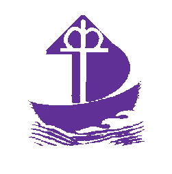

Lakos Ádám Evangélikus Szeretetszolgálat Devecseri Idősek Otthona
Bemutatkozás
A Magyarországi Evangélikus Egyház fenntartásában működő Lakos Ádám Evangélikus Szeretetszolgálat elkötelezett abban, hogy ellátottjai számára az elérhető legjobb minőségű szolgáltatásokat keresztény szellemben nyújtsa, ezért a lelki erősítésre nagy gondot fordít.
Devecser szívében működik a Lakos Ádám Evangélikus Szeretetszolgálat Idősek Otthona. A több épületegyüttesből álló 100 férőhelyes otthon tömegközlekedési eszközökkel, személygépkocsival jól megközelíthető, a felújított Esterházy-kastélyban működik. A városi könyvtárral közös udvarban, ingyenes parkolási lehetőség biztosított.
Intézményünkben arra törekszünk, hogy lakóink minél hosszabb ideig megőrizhessék önállóságukat alapbetegségeikhez mérten, természetesen azt figyelembe véve. Mindannyiunk vágya, hogy időskorunkat kényelembe, tapintatos gondoskodás mellett éljük meg. Otthonunkban figyelmet fordítunk arra, hogy lakóink életkorának és egészségi állapotuknak megfelelő életkörülményeket biztosítsunk. Az épület kétszintes akadálymentesített, a közlekedést lift is segíti, a szintek között. Szobáink 2-3 ágyasak külön fürdőszobával ellátottak.
Az Alzheimer és az Alzheimer típusú megbetegedésben szenvedők számára külön biztonságos gondozási rész került kialakításra, négyágyas szobákkal, foglalkoztatóval külön férfi, női fürdővel. Feladatunknak érezzük, hogy lakóink környezetükkel megelégedve, ahhoz jól alkalmazkodva: hozzátartozóikkal, gyermekeikkel, rokonokkal, barátokkal a kapcsolatot fenntartva éljenek. Intézményünk szakápolási működési engedéllyel is rendelkezik.
 Az öregség ne az élet vége, hanem koronája legyen
Az öregség ne az élet vége, hanem koronája legyen

Kollégáimmal azon fáradozunk, hogy olyan intézményi miliőt tudjunk létrehozni, mely magában hordozza az otthon „melegét”. Megértéssel, elfogadással, tisztelettel, türelemmel legyünk lakóink iránt. Ezáltal a lakók közérzetét és ezen keresztül egészségi állapotukat pozitív irányba befolyásolhatjuk. A programok, áhítatok, a napi szintű foglalkozások, a közös étkezések lehetősége, mind, mind azt a célt szolgálja, hogy erősítsük a közösségi kapcsolatokat.
Érdeklődés esetén kiemelném a személyes körültekintés, látogatás fontosságát, szeretettel várunk minden érdeklődőt.
Egy Madách idézettel zárnám soraimat mely talán mottónk is lehetne:
Nem önmagadért, hanem másokért élni a legszebb hivatás